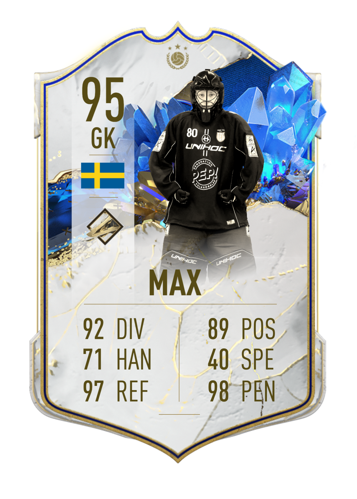
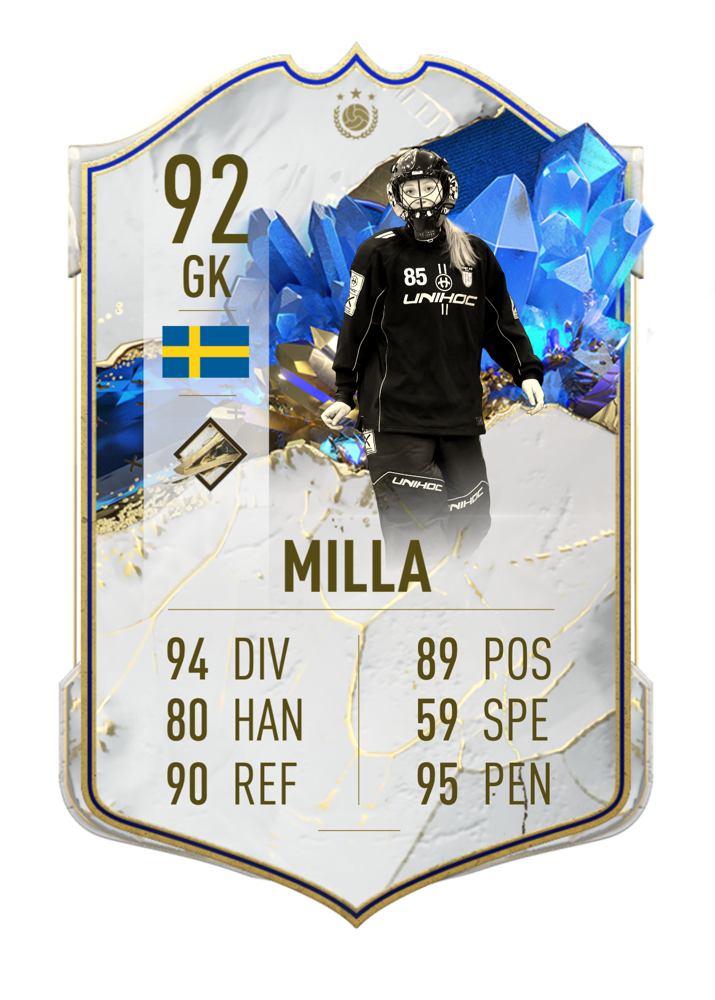

tryck på ett utav korten för att få mera information om spelaren
Max kommer från Vallentuna IBK där han spelade fram till säsongen 22/23. Halvvägs in i säsongen så byter Max förening till Täby för att få bättre utvecklingspotential. I Täby spelar han med HJ truppen i serierna HJ1 och H4.
Milla kommer från Vallentuna IBK och bytte inför säsongen 22/23 till Täby där hon spelar med DJ truppen. Hon bytte till täby för möjligheten att få utvecklas och nå de högsta nivåerna av innebandyn. I Täby spelar hon JAS och D1
